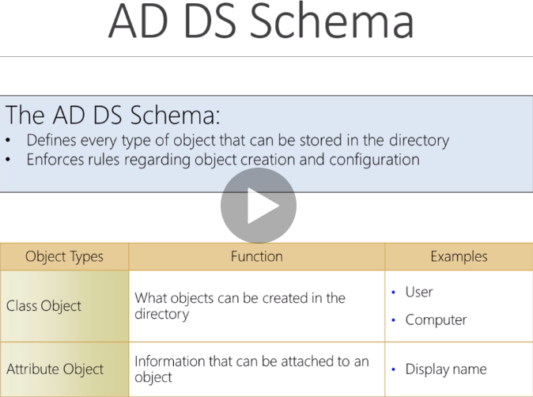

its basically thr rulebook hi

a domain functions like a domain controller
.com or .org is liek a domain


we l onyl work with domains here other advanced courses work up tp trees
INside active directoy there are organizational untis

they are just containers


objects are inside our OU's